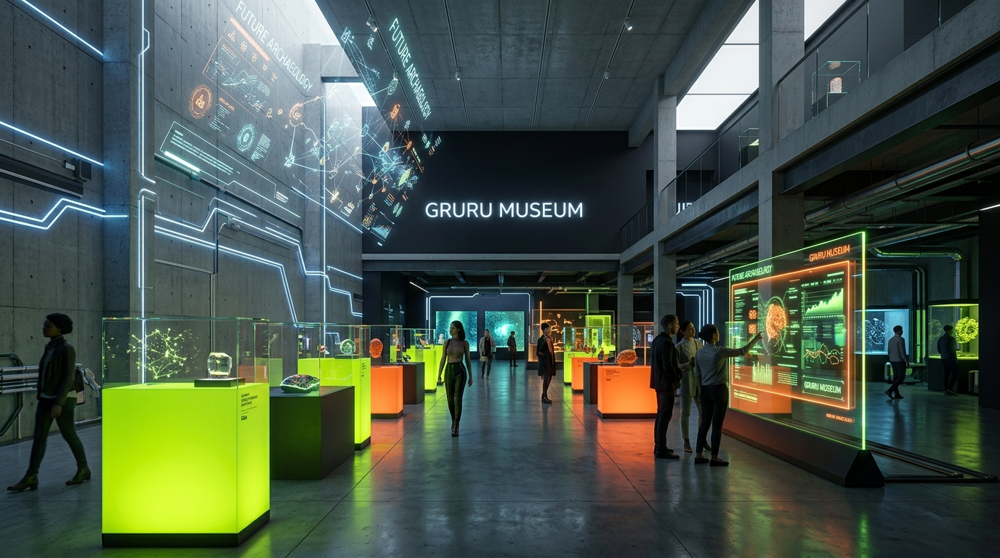
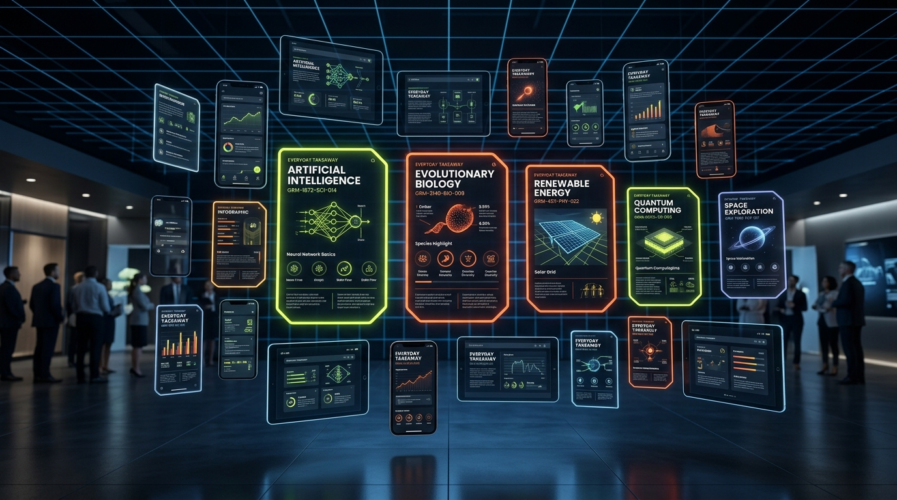

GRURU MUSEUM
“New Knowledge. New Storytelling.
Built for Everyday Living.”
พิพิธภัณฑ์ความรู้ดิจิทัลสไตล์ Modern Art ปะทะ Sci-Fi Lab ที่เปลี่ยน “ความรู้ที่ซ่อนอยู่ในอดีต” ให้กลับมามีชีวิต ผ่านโครงสร้าง Knowledge Graph และเรื่องเล่าที่คนรุ่นใหม่นำไปปรับใช้ได้จริงทันที

ตำแหน่งทางการตลาด: สนุก แต่มีหลักฐาน
แก้ Pain Point ใหญ่ของผู้บริโภคยุคใหม่: "อยากเข้าใจโลกให้ลึกกว่าคลิปสั้น แต่ไม่อยากรู้สึกเหมือนนั่งเรียน"
ยืนอยู่ในควอดรันต์ทองคำ [สนุก + เป็นเครือข่ายความรู้] ต่างจากวิกิพีเดียที่แห้ง และต่างจากคลิปสั้นที่ไม่บอกที่มา ผู้ใช้สามารถตรวจสอบความจริงย้อนหลังได้ทุกจุด (100% Traceable Citations)
ทุกการเยี่ยมชมเพียง 3–5 นาที ต้องได้ อย่างน้อยหนึ่งเรื่องที่นำกลับไปใช้ได้จริงทันที (Everyday Takeaway)
พันธกิจ 5 ประการ: จากอดีตสู่ชีวิตประจำวัน
เส้นทางการแปรรูปความรู้ (Knowledge Pipeline) ที่ได้มาตรฐานตั้งแต่การขุดค้นจนถึงการนำไปใช้
คัดสรรความรู้จากประวัติศาสตร์ วิทยาศาสตร์ และภูมิปัญญาโบราณ ระบุแหล่งที่มาทุกชิ้น
เปลี่ยนข้อความยาวเป็นโหนดความรู้ และสร้างความสัมพันธ์เชิงความหมาย (Semantic Triples)
นำเสนอแบบ Visual Storytelling ที่ดูจบใน 3–5 นาที แทนการอ่านบทความยาว
เปิดให้สำรวจผ่าน Data Booming และ Interactive Graph เห็นจุดเชื่อมข้ามยุค
ปิดท้ายทุกหัวข้อด้วยการ์ด Everyday Takeaway ชี้ชัดวิธีประยุกต์ใช้ในชีวิตประจำวัน
กลุ่มเป้าหมายหลัก: 3 บุคลิกเฉพาะเจาะจง
Insight ร่วม: "อยากรู้ลึก แต่ไม่อยากรู้สึกว่ากำลังเรียน" — ออกแบบ Mobile-First และ Dark Mode เป็นค่าเริ่มต้น
นักศึกษาจบใหม่หรือวัยเริ่มทำงาน ใช้สมาร์ตโฟนเป็นจอหลัก ชอบคอนเทนต์ความรู้สวยงามที่สะท้อนรสนิยมเมื่อแชร์ลงโซเชียลมีเดีย
• การ์ดความรู้แชร์ได้ขนาด 1080×1350 px (IG/Threads/X)
นักออกแบบ นักการตลาด คอนเทนต์ครีเอเตอร์ และนักพัฒนา หาแรงบันดาลใจและเชื่อมโยงไอเดียใหม่จากบริบทประวัติศาสตร์และเทคโนโลยี
• ระบบบันทึกคอลเลกชันส่วนตัว & ดาวน์โหลด Dataset
คนทำงานระดับซีเนียร์หรือพ่อแม่รุ่นใหม่ที่สนใจที่มาของสิ่งรอบตัว เช่น วัฒนธรรมอาหาร สุขภาพ วิทยาศาสตร์สิ่งแวดล้อม และภูมิปัญญา
• แหล่งอ้างอิงเปิดดูได้ในคลิกเดียว + Takeaway ที่ชัดเจน
นวัตกรรม: Data Booming Experience
คลิกโหนดศูนย์กลางเพื่อระเบิดความรู้ทีละชั้น (40ms Stagger) พร้อมตัวนับเชื่อมโยงแบบ Real-time
แผนที่ความรู้ฉบับเต็ม: 6 หมวดหมู่ & สัญลักษณ์
ระบบแยกสีและรูปทรงตามหลัก Universal Design (Color-blind friendly) พร้อมเส้นความสัมพันธ์ 3 รูปแบบ
การค้นพบจุลินทรีย์ในไหหมักแป้งสมัยอียิปต์โบราณ ต้นกำเนิดการแปรรูปอาหารและไบโอเทคโนโลยีสมัยใหม่
• ทึบ: Influenced (มีอิทธิพลต่อ)
• ประ: Derived from (พัฒนามาจาก)
• จุด: Used in (นำไปใช้ใน)
ระบบดีไซน์: Past Warm × Future Electric
กฎสัดส่วน 70-20-10, การตัดมุม HUD 45°, ฟอนต์มาตรฐาน 3 ตระกูล และความคมชัดที่ผ่านเกณฑ์ WCAG AA 100%
สีหลักอันดับหนึ่ง • อัตราคอนทราสต์ 17:1
สีของอดีต • เงาแข็งปุ่ม 4px
เทคโนโลยี • อนาคต
ข้อมูล • วิทยาศาสตร์
โมเดลความสำเร็จ: Everyday Takeaway & Growth
เปลี่ยนความรู้ลึกเป็น "การ์ดความรู้ไวรัล 1080×1350" ที่ผู้ใช้แชร์ต่อทุกวัน สร้าง Organic Traffic มหาศาล

ผู้บริโภคไม่ได้ต้องการเพียงข้อมูล แต่ต้องการ วิธีนำไปใช้ในชีวิต เมื่อจบด้วยการกระทำที่ชัดเจน อัตราการบันทึก (Save Rate) และการแชร์ต่อ (Share Rate) พุ่งสูงขึ้นกว่าบทความทั่วไปถึง 3.4 เท่า
2. Brand Collaborations: พาร์ตเนอร์สร้างนิทรรศการความรู้เฉพาะอุตสาหกรรม
3. Knowledge API: เปิดเชื่อมต่อ Knowledge Graph สู่สถาบันและ AI
แผนการดำเนินงาน: 4 รอบการพัฒนาที่ชัดเจน
สั่งงานผ่าน Google Antigravity พร้อมเกณฑ์ตรวจสอบ Implementation Plan และ Screenshots ในทุกรอบ
แปลงสีเป็น CSS Variables, ตั้งค่าฟอนต์ 3 ตระกูล, กริด 12/8/4 คอลัมน์ และหน้า Style Guide ตรวจ WCAG AA
การ์ดตัดมุม HUD 45°, Specimen Labels, Specimen Grid Background และปุ่มโต้ตอบแบบมีเงาแข็ง
สร้างหน้า Home, Exhibitions, Data Booming, Everyday Lab และ About พร้อมการเล่าเรื่องแบบสแกน
D3.js Force Simulation บน Canvas + 50 โหนดทดสอบความลื่นไหล พร้อมระบบตัวกรองเวลาและหมวดหมู่